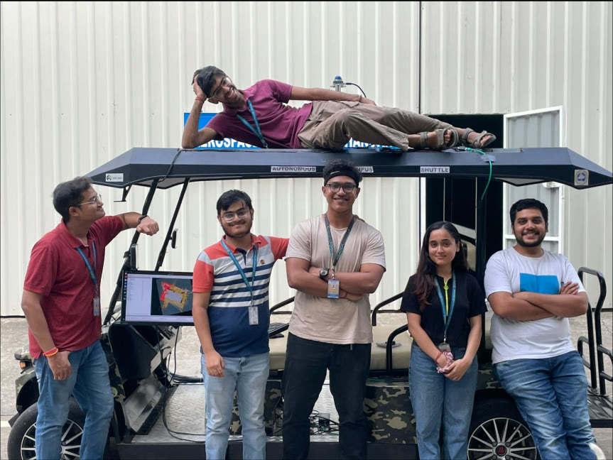
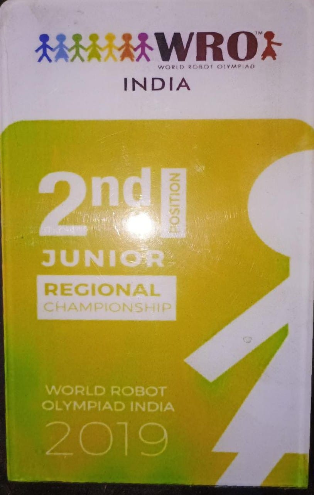

Life so far.
A few milestones. Several bugs. Still running.
Hello World!
Arrived without a manual. Made myself heard.
Learned to walk. Learned to talk.
Balance took a few iterations. Talking was harder to switch off.
Two computers. Unlimited plans.
Intel Pentium dual-core. 2 GB RAM each. 28–100 GB HDDs. My first compute cluster, if you’re generous.
First programs.
Scratch, QBasic and web development. Things moved on screen because I told them to. This seemed like a loophole.
Java. My first proper language.
Hello World now required a class.
The code grew wheels.
WRO India: regional Junior second place in 2019; RoboMission Senior Silver Badge at nationals in 2022. Bugs could now leave the desk.
First heartbreak.
No stack trace. Terrible documentation.
The wheels got bigger.
Deployed autonomy on a real golf cart: Model Predictive Contouring Control (MPCC), learned policies and industrial controls. No simulator reset button.

Raced robots. Spoke to humans.
Built my ICRA racing entry solo: third in simulation qualification, zero collisions. Presented industrial robotics work at ROSCon India.
First startup: AviRob.
Built robot runtimes and machine-evidence systems. Discovered that companies have rather a lot of non-code problems.
Second company. Still building.
Physical AI for industry, in stealth. Apparently one startup was not enough character development.
Before the bigger wheels.
Actual footage. The robots were smaller. The enthusiasm was not.
WRO India 2019 · regional Junior second place

Kaustubh Krishna
Founder · robotics & industrial autonomy · India